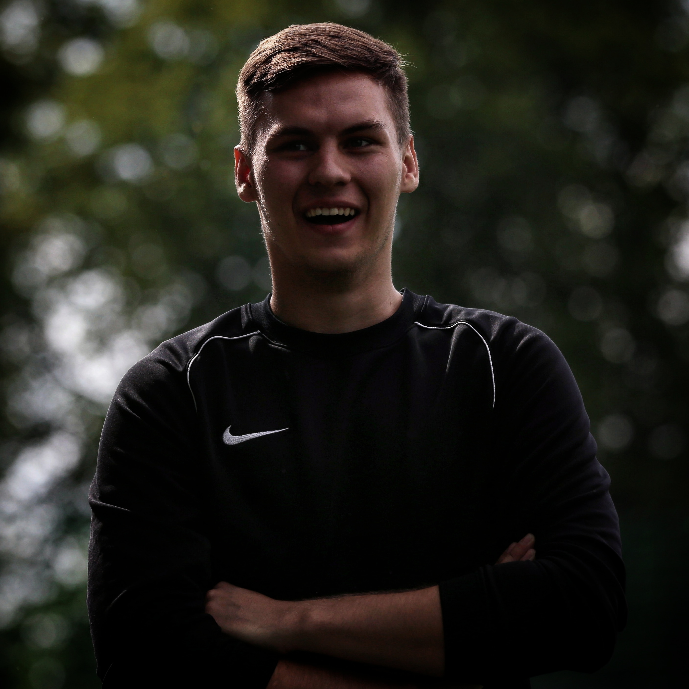
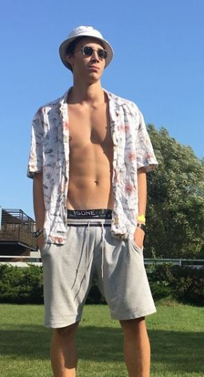

Millal asutati Team Helm?
Team Helm asutati 17. novembril aastal 2018, kui Team Helm osales esmakordselt Tartu Linna Meistrivõsitlustel.
Miks nimi Team Helm?
Nimi Team Helm tuleb meie ikooni Frederik Matthijas Helmi järgi.
Mis on Team Helmi mängude saldo?
Team Helmi arvel on 50 võitu, 11 viiki ning 22 kaotust.
Kui palju mängijaid on Team Helmis?
Kokku on Team Helmi eest mänginud 44 erinevat mängijat. Hetkel on aktiivseid mängijaid 26.
Kes on Team Helmi eest enim väravaid löönud? Enim mänge mänginud?
Enim väravaid on löönud Team Helmi eest Renee Püvi ning enim mänge on mänginud Kristofer Johan Arro. Rohkem infot saate statistika vahelehelt.
Kui palju Team Helm trenne teeb?
Rutiinselt jalgpallitrenne ei tehta, kuid vähemalt nädalas korra toimuvad meil erinevad team-building harjutused
Millega tegelete väljaspool jalgpalli?
Kui raskete treeningute kõrvalt aega jääb, siis käime vabal ajal ka koolis. Suurem osa võistkonnast õpib Tartu Ülikoolis. Vabal ajal meeldib meile ühiselt külastada ka erinevaid meelelahutusasutusi.
Kes on Team Helmi treener(id)?
Team Helmil on lausa mitu treenerit, jalgpalli osaga tegeleb meie mängiv peatreener, vabaaja tegevusi aga organiseerib abitreener!
Peatreener: Karl Sten Kõks
Abitreener: Siim Langel

